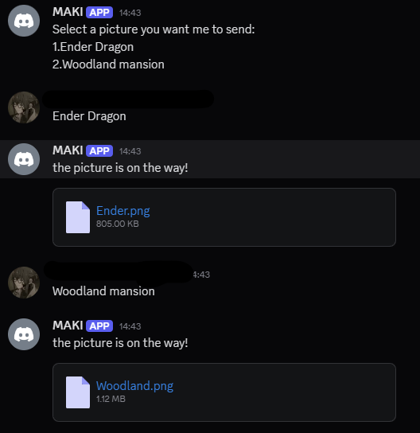
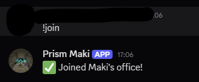
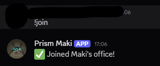
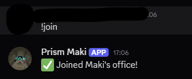

Prism Maki is a Discord bot created to perform some basic commands, play music, and give its creator hands-on experience with coding in Python. It is currently not a public bot and is more of a personal project, showcasing how a bot can interact with users, manage tasks, and bring music to a Discord server.

In this screenshot, we see Prism Maki in action. Here, I access the gallery, where the bot lets me choose which image to send — making it quick and fun to browse and share pictures.
Currently, the bot can be a bit slow when sending pictures, but it still makes browsing and sharing images easy and interactive.
it can also send GIFs and reply to certain messages, making it a fun and interactive way to engage on Discord.
Heres an example of how the bot would look like if he was in VC with you

Prism Maki can only join the voice channel that you are currently in. If you’re not in a voice channel when you try to use the join command, the bot will respond with an error telling you to join a channel first. This ensures that Maki always knows which voice channel to connect to and prevents confusion or accidental joins in the wrong channel. It also makes using voice commands more intuitive, so you don’t have to worry about specifying channels manually — simply being in the channel is enough for the bot to join and start playing music.
If you want to invite Prism Maki to test it out yourself, there’s a link provided below. This allows you to add the bot to your server and explore all of its features firsthand. You can try sending commands, viewing the gallery, playing music in voice channels, and more. The bot is still a personal project, so feel free to experiment and see how it responds. Inviting it is simple, and once added, you can immediately start testing its capabilities in your own server.
Contacts
If you have any questions, suggestions, or feedback about Prism Maki, feel free to reach out! The creator’s contact information can be found in their Discord bio. Prism Maki is currently a personal project, so any input you provide will help improve the bot and make future updates even better
Whether you want to suggest new gallery images, test the music playback, or just say hi, you can reach out through Discord using the info in the bio. Your messages are always welcome, and you’ll get a response as soon as possible.
 
